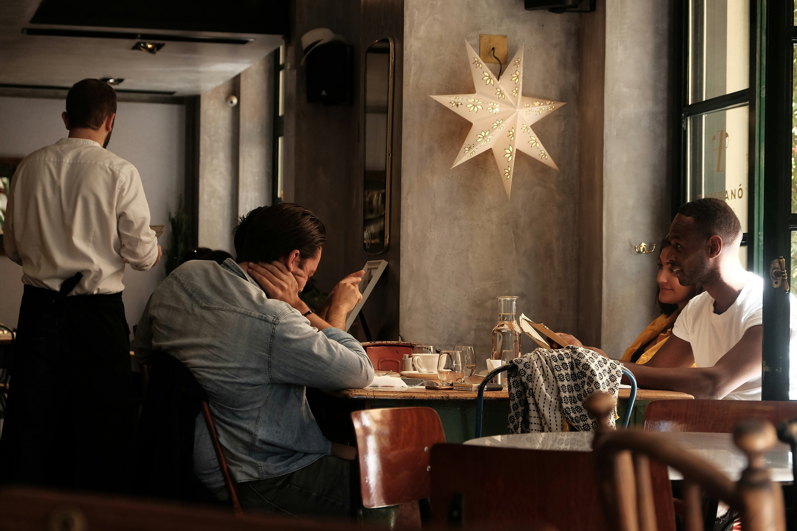
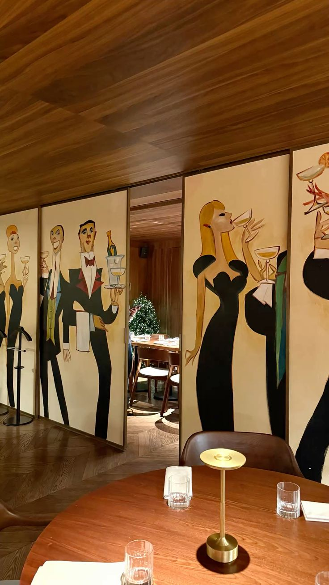
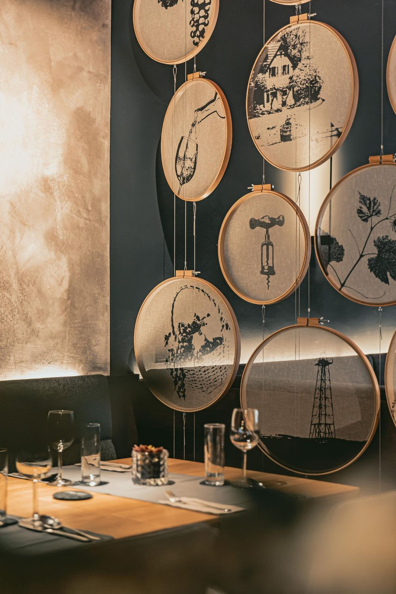
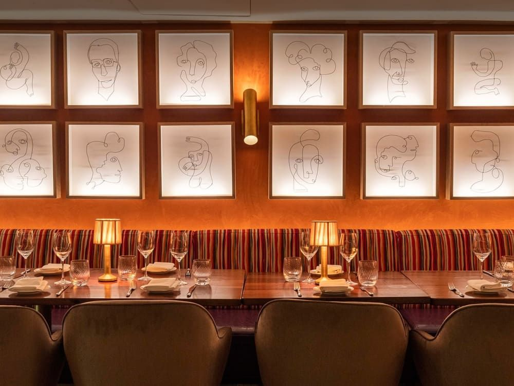
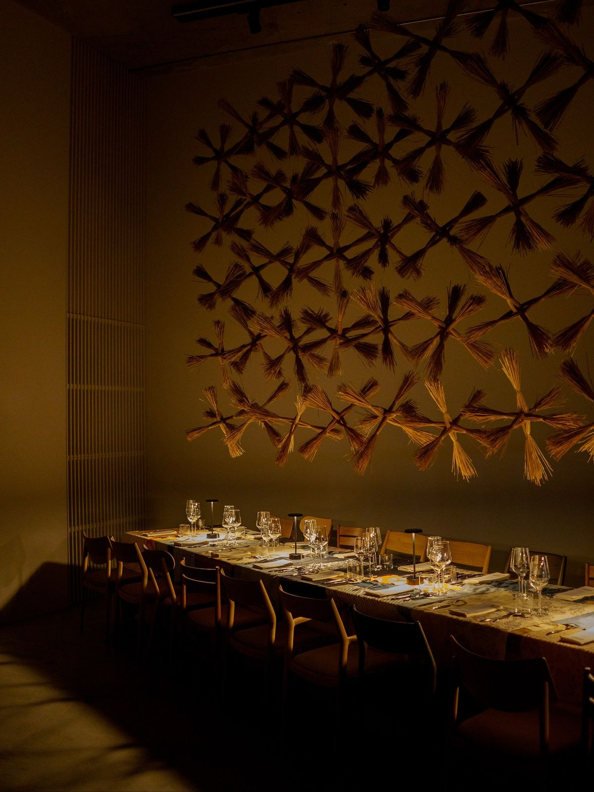

Guest experience design is a critical component of any successful restaurant, focusing on creating memorable interactions that leave a lasting impression. It encompasses everything from the moment a customer walks through the door to the final goodbye, ensuring each touchpoint contributes to a cohesive and enjoyable experience. A well-thought-out guest experience design considers the emotional journey of the customer, aiming to evoke positive feelings and build lasting relationships. This approach not only enhances customer satisfaction but also encourages repeat visits and word-of-mouth recommendations, ultimately driving business growth and brand loyalty.
Enhancing the guest experience begins long before a customer sits down at a table. From the moment a potential diner encounters a restaurant's advertisement, social media page, or website, the design and messaging should make them feel welcomed and excited. Clear, visually appealing menus both online and in print help guests make decisions with ease and confidence. Friendly and consistent branding across all touchpoints sets the tone for what guests can expect when they arrive. Once inside, thoughtful details like well-designed table settings, ambient lighting that matches the restaurant's personality, and staff who reflect the warmth of the brand all work together to create an environment where guests feel valued and comfortable. Every visual and sensory element should tell the same story, reinforcing the idea that the restaurant genuinely cares about the people it serves.
Technology and personalization are also powerful tools for elevating the guest experience in meaningful ways. Offering online reservations, digital menus, and loyalty programs shows customers that the restaurant respects their time and values their continued patronage. Collecting feedback through follow-up emails or review platforms gives guests a voice and signals that their opinions actually matter to the business. Personalized touches, such as remembering a returning customer's favorite dish or acknowledging a special occasion, create moments that guests are likely to share with friends and family. Social media engagement also plays a growing role, as restaurants that respond to comments and showcase user-generated content build a sense of community around their brand. When a restaurant treats every interaction as an opportunity to connect, the guest experience extends far beyond the meal itself and becomes something truly memorable.
View more information about the importance of guest experience
Restaurant Design Awards


